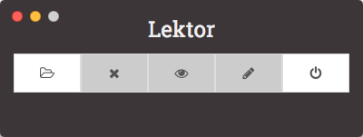
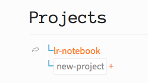

Welcome to Shawn's lr-notebook!
What is this?
This is my personal lab notebook.
It is built with Lektor, hence the name lr-notebook.
[What is Lektor?](https://www.getlektor.com/docs/what/)
Set up your own notebook
Get the lr-notebook zip. Put it in cloud storage if you wish.
Download the Lektor app.
http://getlektor.com/
Run the Lektor app, use the button to open the file nb.lektorproject in your lr-notebook folder, then the button to view it running in your browser. That's it!

Create a project

- Browse to the Projects page.
- Type the desired project name into the box, and click +. The page should reload with project listed.
The  is a link to open the project folder.
is a link to open the project folder.
Create a project entry

- Browse to project page.
- Select a date in the date picker.
- Click + to create an entry for the selected date.
Share
If hosting your lr-notebook on github, use Travis-CI to build a static site every commit and deploy it to a gh-pages branch for free public hosting.
Travis-CI + Lektor [instructions](https://www.getlektor.com/docs/deployment/travisci/)